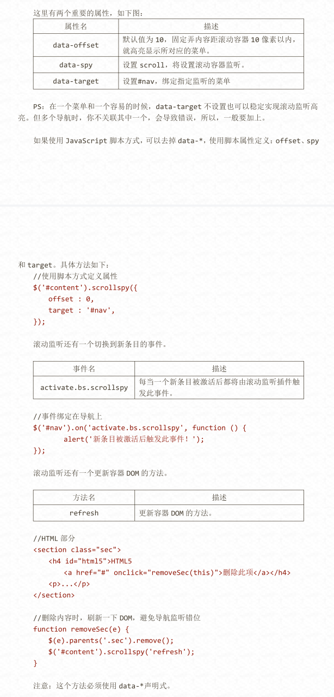

标准通用标记语言下的一个应用 HTML 标准自 1999 年 12 月发布的 HTML4.01 后，后继的 HTML5 和其它标准被束之高阁，为了推动 Web 标准化运动的发展，一些公司联 合起来，成立了一个叫做 Web Hypertext Application Technology Working Group （Web 超文本应用技术工作组 -WHATWG） 的组织。WHATWG 致力于 Web 表单和应用程序， 而 W3C（World Wide Web Consortium，万维网联盟） 专注于 XHTML2.0。在 2006 年， 双方决定进行合作，来创建一个新版本的 HTML。
Bootstrap，来自 Twitter，是目前很受欢迎的前端框架。Bootstrap 是基 于 HTML、CSS、JAVASCRIPT 的，它简洁灵活，使得 Web 开发更加快捷。[1] 它由 Twitter 的设计师 Mark Otto 和 Jacob Thornton 合作开发，是一个 CSS/HTML 框架。Bootstrap 提供了优雅的 HTML 和 CSS 规范，它即是由动态 CSS 语言 Less 写成。Bootstrap 一经推出 后颇受欢迎，一直是 GitHub 上的热门开源项目，包括 NASA 的 MSNBC（微软全国广播公司） 的 Breaking News 都使用了该项目。[2] 国内一些移动开发者较为熟悉的框架，如 WeX5 前端开源框架等，也是基于 Bootstrap 源码进行性能优化而来。[3]
JQuery 是继 prototype 之后又一个优秀的 Javascript 库。它是轻量级的 js 库 ，它兼容 CSS3，还兼容各种浏览器（IE 6.0+, FF 1.5+, Safari 2.0+, Opera 9.0+）， jQuery2.0 及后续版本将不再支持 IE6/7/8 浏览器。jQuery 使用户能更方便地处理 HTML （标准通用标记语言下的一个应用）、events、实现动画效果，并且方便地为网站提供 AJAX 交互。jQuery 还有一个比较大的优势是，它的文档说明很全，而且各种应用也说得很详细， 同时还有许多成熟的插件可供选择。jQuery 能够使用户的 html 页面保持代码和 html 内容 分离，也就是说，不用再在 html 里面插入一堆 js 来调用命令了，只需要定义 id 即可。
近几年随着 jQuery、Ext 以及 CSS3 的发展，以 Bootstrap 为代表的前端 开发框架如雨后春笋般挤入视野，可谓应接不暇。不论是桌面浏览器端还是移动端都涌现出 很多优秀的框架，极大丰富了开发素材，也方便了大家的开发。这些框架各有特点，本文对 这些框架进行初步的介绍与比较，希望能够为大家选择框架提供一点帮助，也为后续详细研 究这些框架的抛砖引玉。
ExtJS 可以用来开发 RIA 也即富客户端的 AJAX 应用，是一个用 javascript 写的，主要用于创建前端用户界面，是一个与后台技术无关的前端 ajax 框架。因此，可以 把 ExtJS 用在.Net、Java、Php 等各种开发语言开发的应用中。ExtJs 最开始基于 YUI 技 术，由开发人员 JackSlocum 开发，通过参考 JavaSwing 等机制来组织可视化组件，无论 从 UI 界面上 CSS 样式的应用，到数据解析上的异常处理，都可算是一款不可多得的 JavaScript 客户端技术的精品。
